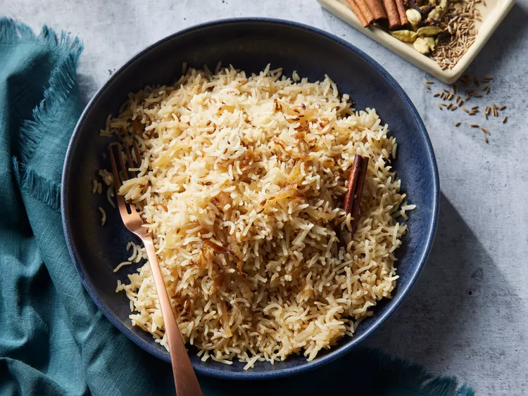

Basmati-rice

Ingridients
-
1 ½ cups basmati rice
- 2 tablespoons vegetable oil
- 1 (2 inch) piece cinnamon stick
- 2 pods green cardamom
2 whole cloves
- 1 tablespoon cumin seed
- 1 small onion, thinly sliced
2 ½ cups water
1 teaspoon salt, or to taste
STEPS
-
Place rice into a bowl with enough water to cover. Set aside to soak for 20 minutes.
-
In the last 10 minutes of soaking, heat oil in a large pot over medium heat. Add cinnamon stick, and cloves, then stir.
-
Add sliced onion
-
fry onion till they turn golden
-
Add rice to it after draining water
-
fry for 5 min then add water and let it cook for 10 min